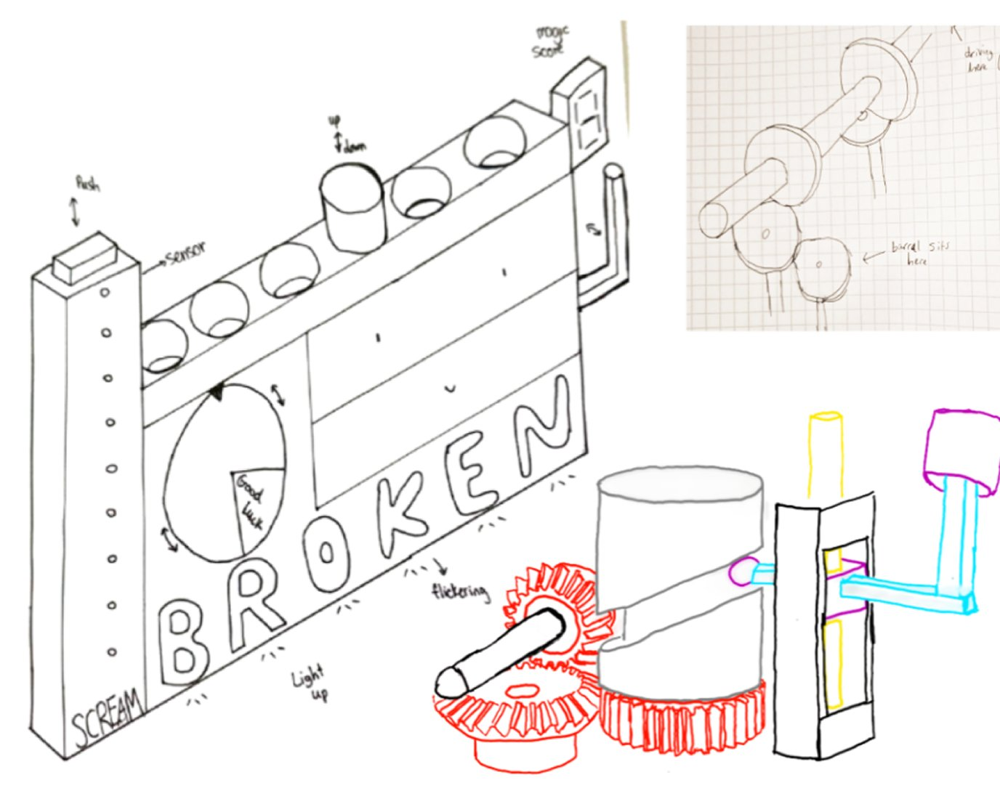
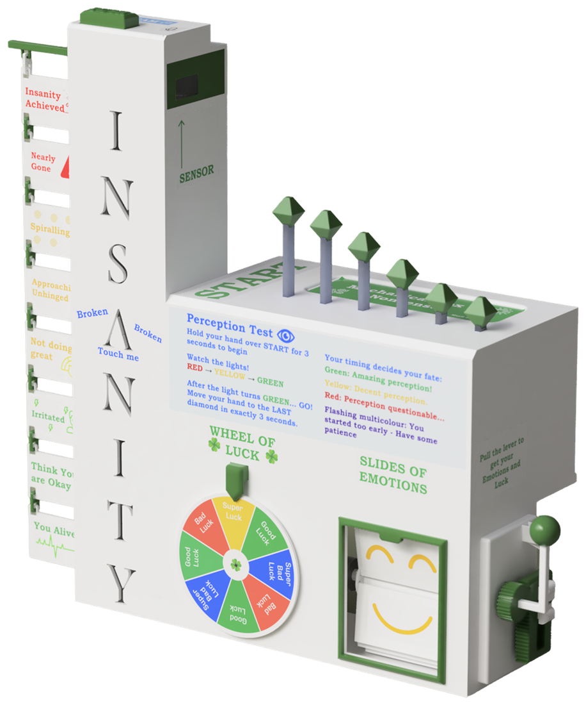
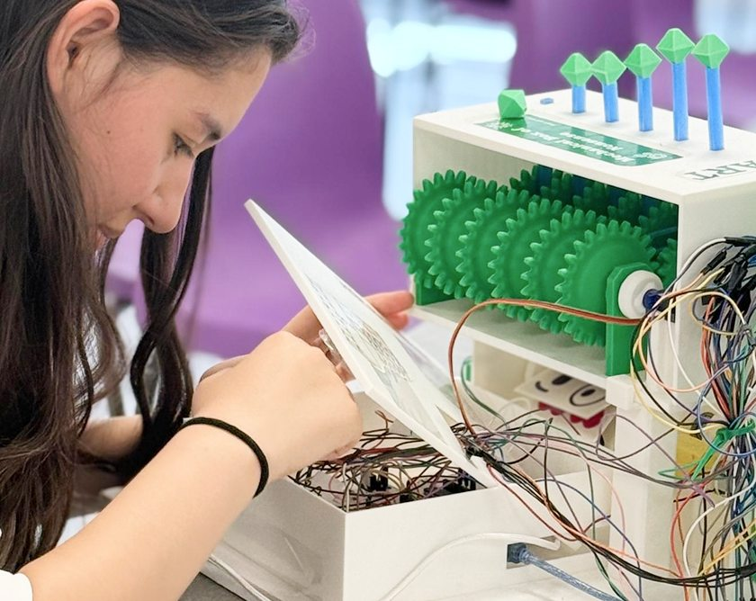

MindMeter
Measuring the Unmeasurable
Technical
CAD, Mechanical Design, Rapid Prototyping, DFA, Arduino, Electronics Integration, Soldering
Transferable
Creativity, Resourcefulness, Resilience, Teamwork, Presentation
Pair project with Aidan Ryder
The Challenge
Create an interactive mechatronic product using resourceful design, simple electronics and a range of engaging mechanical movements.
The Solution
A playful machine that measures sanity, perception, luck and emotion through sensors, lights and interactive mechanical games, creating a varied user experience.
My Role
- Developed the full CAD model and mechanical systems
- 3D printed, finished and assembled the prototype
- Integrated electronics through soldering and wiring
- Presented and demonstrated the working machine to visitors



Development Journey
MindMeter measures four invented stats, Sanity, Perception, Luck and Emotion, each inspired by a different reference: a carnival strength-test game, a crankshaft-driven piston row, and a slot machine. We stayed deliberately resourceful throughout: the only components bought beyond the supplied kit were bearings and a ToF sensor, four LED colours were combined to produce seven output colours instead of buying an LED strip, and every sticker and sign was designed, printed and cut by hand.
Insanity Tower
The tower measures Sanity. In idle it glows blue with a flickering letter 'A', stoppable with a capacitive touch sensor behind it. Pressing the button runs a 'sanity check': a microphone reads peak volume through an op-amp circuit with 11× gain, and a rising bar of 16 LEDs, driven by two shift registers on just 3 microcontroller pins, shows the result. Past a threshold, the tower goes 'haywire' and triggers the rest of the machine. The original concept was two separate ideas, a broken sign with the touch sensor, and a separate loudness check, combined into one tower to cut down on large prints and make the design feel more cohesive.
Magic Diamonds
Six diamond-topped pistons measure Perception. In idle they track a hand using a time-of-flight sensor; in test mode, a countdown plays on the tower and the user has exactly 3 seconds to move their hand to the end of the row, graded red, yellow or green. A single servo drives all six pistons through a shared gear shaft, one Scotch-yoke mechanism per piston, phased so the pistons rise in a travelling wave rather than together. The first version used a barrel cam system, but 3D-printed cam followers had too much friction to climb the barrel, so we switched to the Scotch-yoke design, then reinforced the shaft after the first version proved too weak.
Wheel of Luck & Slides of Emotion
Pulling a side lever spins a wheel and a set of emotion slides continuously; releasing it lets both coast to a random stop, revealing a luck and emotion result. A single DC motor drives the wheel directly and, through a 1:1 bevel gear pair, a second shaft carrying a rotating barrel that carries the emotion slides, held in place by a fixed stopper so one slide is always visible. The lever itself drives a rack and pinion, sized using the arc-length relationship s = rθ, a 20mm rack travel at 90° of lever rotation gave a required pinion radius of 12.8mm, met with a standard module 0.8, 32-tooth gear. The emotion slides were originally geared 2:1 to spin faster than the wheel, but testing showed direct drive was already fast enough, so the extra gear was removed to simplify the mechanism.
Circuit and Code
Everything runs from a single Arduino Uno. High-current and low-level signal components sit on separate power rails to cut electrical noise, decoupling capacitors and flyback diodes protect the circuit, and a MOSFET switches the DC motor instead of an H-bridge, since only one direction of movement was needed. The code is built around enums and switch-case logic implementing several finite state machines, one each for the pistons, the tower, and the motor subsystems, run with non-blocking timing so nothing stalls while something else is active.
Final Design

Sound-Responsive Tower
A push button activates the microphone, which measures sound level and changes the LEDs from green to red.
Hand-Tracking Pistons
A ToF sensor measures hand distance, letting the crystal-topped pistons follow the user in a wave-like motion.
Scotch-Yoke Mechanism
One servo drives six pistons through a shared Scotch-Yoke and gear system.
Capacitive Touch Input
Touching the sensor stops the flickering light.
Luck and Emotion Mechanism
Bevel gears transfer rotation through supported shafts and bearings, letting one motor drive both the Wheel of Luck and the flip-clock-style emotion display.
Rack-and-Pinion Lever
The side lever drives a rack-and-pinion mechanism, triggering the Wheel of Luck and Slides of Emotion.